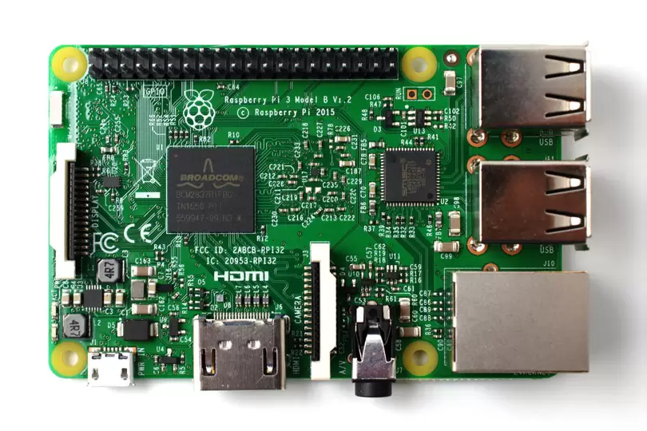
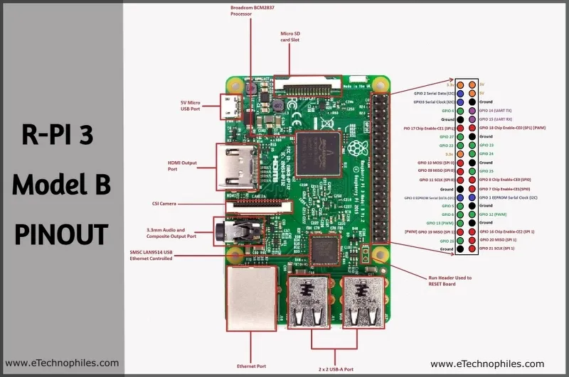

We have take 4 raspberry pi 3 B and put them in a series of 4. So that this 4 device will work in parallel and give output in a single unit. Raspberry pi has its own OS called Raspbian As we know raspberry pi only has 1 gb of onboard memory Some programs can only utilize 25% of total cluster capability. They use one core per node making it inefficient A modern Core i7 can easily beat 4 node rpi cluster in single threadded workloads. Building a rpi cluster on bigger scale makes it more expensive It is only Good for some type of parallel Workloads.
The Raspberry Pi has a number of ports which you will use to control the Raspberry Pi, and it can use to control other devices. Your Raspberry Pi will have the following ports:
USB – USB ports are used to connect a wide variety of components, most commonly a mouse and keyboard.
HDMI – The HDMI port outputs video and audio to your monitor.
Audio – The audio jack allows you to connect standard headphones and speakers.
Micro USB – The Micro USB port is only for power, do not connect anything else to this port. Always connect the power after you have already connected everything else.
GPIO – The GPIO ports allow the Raspberry Pi to control and take input from any electronic component.
SD card slot – The Raspberry Pi uses SD cards the same way a full-size computer uses a hard drive. The SD card provides the Raspberry Pi with internal memory, and stores the hard drive.
CPU: Quad-core 64-bit ARM Cortex A53 clocked at 1.2 GHz
GPU: 400MHz VideoCore IV multimedia
Memory: 1GB LPDDR2-900 SDRAM (i.e. 900MHz)
USB ports: 4
Video outputs: HDMI, composite video (PAL and NTSC) via 3.5 mm jack
Network: 10/100Mbps Ethernet and 802.11n Wireless LAN
Peripherals: 17 GPIO plus specific functions, and HAT ID bus
Bluetooth: 4.1
Power source: 5 V via MicroUSB or GPIO header
Size: 85.60mm × 56.5mm
Weight: 45g (1.6 oz)
Broadcom BCM2837: It is a 1.2GHz 64bit ARM quad-core Cortex A53 processor, with 512 KiB shared L2 cache, dual-core VideoCore IV GPU @ 400 MHz supporting OpenGL ES 2.0, hardware-accelerated OpenVG, and 1080p30 H.264 high-profile decode.
A powerful feature of the Raspberry Pi is the row of GPIO (general-purpose input/output) pins along the extreme right edge of the board. Like every Raspberry Pi chipset, it consists of a 40-pin GPIO. A standard interface for connecting a single-board computer or microprocessor to other devices is through General-Purpose Input/Output (GPIO) pins. GPIO pins do not have a specific function and can be customized using the software.

The board consists of two 5V pins, two 3V3 pins, and 9 ground pins (0V), which are unconfigurable.
5V: The 5v pins directly deliver the 5v supply coming from the mains adaptor. This pin can use to power up the Raspberry Pi, and it can also use to power up other 5v devices.
3.3V: The 3v pin is there to offer a stable 3.3v supply to power components and to test LEDs.
GND: Ground is commonly referred to as GND. All the voltages are measured with respect to the GND voltage.
A GPIO pin that is set as an input will allow a signal to be received by the Raspberry Pi that is sent by a device connected to this pin. A voltage between 1.8V and 3.3V will be read by the Raspberry Pi as HIGH and if the voltage is lower than 1.8V will be read as LOW.
A GPIO pin set as an output pin sends the voltage signal as high (3.3V) or low (0V). When this pin is set to HIGH, the voltage at the output is 3.3V and when set to LOW, the output voltage is 0V.
Along with the simple function of input and output pins, the GPIO pins can also perform a variety of alternative functions. Some specific pins are:
Software PWM is available on all pins
Hardware PWM is available on these pins only: GPIO12, GPIO13, GPIO18, GPIO19
SPI (Serial Peripheral Interface) is another protocol used for master-slave communication. It is used by the Raspberry pi board to quickly communicate between one or more peripheral devices. Data is synchronized using a clock (SCLK at GPIO11) from the master (RPi) and the data is sent from the Pi to our SPI device using the MOSI (Master Out Slave In) pin. If the SPI device needs to communicate back to Raspberry Pi, then it will send data back using the MISO (Master In Slave Out) pin. There are 5 pins involved in SPI communication:
GND: Connect all GND pins from all the slave components and the Raspberry Pi 3 board together.
SCLK: Clock of the SPI. Connect all SCLK pins together.
MOSI: It stands for Master Out Slave In. This pin is used to send data from the master to a slave.
MISO: It stands for Master In Slave Out. This pin is used to receive data from a slave to the master.
CE: It stands for Chip Enable. We need to connect one CE pin per slave (or peripheral devices) in our circuit. By default, we have two CE pins but we can configure more CE pins from the other available GPIO pins.
SPI0: GPIO9 (MISO), GPIO10 (MOSI), GPIO11 (SCLK), GPIO8 (CE0), GPIO7 (CE1)
SPI1: GPIO19 (MISO), GPIO20 (MOSI), GPIO21 (SCLK), GPIO18 (CE0), GPIO17 (CE1), GPIO16 (CE2)
2C is used by the Raspberry Pi board to communicate with devices that are compatible with Inter-Integrated Circuit (a low-speed two-wire serial communication protocol). This communication standard requires master-slave roles between both the devices. I2C has two connections: SDA (Serial Data) and SCL (Serial Clock). They work by sending data to and using the SDA connection, and the speed of data transfer is controlled via the SCL pin.
Data: (GPIO2), Clock (GPIO3)
EEPROM Data: (GPIO0), EEPROM Clock (GPIO1)
Serial communication or the UART (Universal Asynchronous Receiver / Transmitter) pins provide a way to communicate between two microcontrollers or the computers. TX pin is used to transmit the serial data and RX pin is used to receive serial data coming from a different serial device.
TX (GPIO14)
RX (GPIO15)